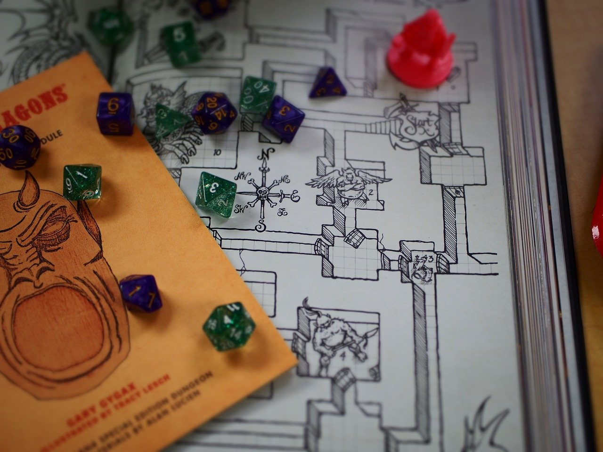

WHAT TO EXPECT OUT OF D&D

1. The DM describes the environment
The DM tells the players where their adventurers are and what’s around them, presenting the basic scope of options that present themselves (how many doors lead out of a room, what’s on a table, who’s in the tavern, and so on).
2. The players describe what they want to do.
Sometimes one player speaks for the whole party, saying, “We’ll take the east door,” for example. Other times, different adventurers do different things: one adventurer might search a treasure chest while a second examines an esoteric symbol engraved on a wall and a third keeps watch for monsters. The players don’t need to take turns, but the DM listens to every player and decides how to resolve those actions. Sometimes, resolving a task is easy. If an adventurer wants to walk across a room and open a door, the DM might just say that the door opens and describe what lies beyond. But the door might be locked, the floor might hide a deadly trap, or some other circumstance might make it challenging for an adventurer to complete a task. In those cases, the DM decides what happens, often relying on the roll of a die to determine the results of an action.
3. The DM narrates the results of the adventurers’ actions.
Describing the results often leads to another decision point, which brings the flow of the game right back to step 1. This pattern holds whether the adventurers are cautiously exploring a ruin, talking to a devious prince, or locked in mortal combat against a mighty dragon. In certain situations, particularly combat, the action is more structured and the players (and DM) do take turns choosing and resolving actions. But most of the time, play is fluid and flexible, adapting to the circumstances of the adventure. Often the action of an adventure takes place in the imagination of the players and DM, relying on the DM’s verbal descriptions to set the scene. Some DMs like touse music, art, or recorded sound effects to help set the mood, and many players and DMs alike adopt different voices for the various adventurers, monsters, and other characters they play in the game. Sometimes, a DM might lay out a map and use tokens or miniature figures to represent each creature involved in a scene to help the players keep track of where everyone is.